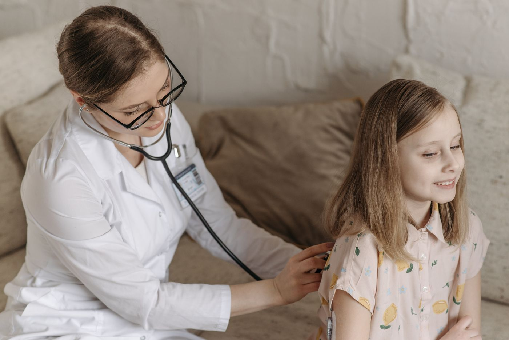

Founder & CEO
Dr. Ahmed Abbasi
An internal medicine physician connecting his experience across the United States and Canada with a vision for stronger healthcare systems.
Read Dr. Ahmed Abbasi’s storyAmanah Medical
Your knowledge can reach beyond the people you see each day. Join Muslim physicians working toward a future where medical teams across the Middle East can share expertise and bring care closer to their communities.
WHY AMANAH EXISTS
A child. A parent. A family waiting for answers. And a local medical team doing everything they can to help.
Amanah begins with a belief: the knowledge we carry as physicians is a trust to share. By working alongside local clinicians, we hope to help more families find the care they need, closer to home.

THE BELIEF THAT GUIDES US
مِنْ أَجْلِ ذَٰلِكَ كَتَبْنَا عَلَىٰ بَنِي إِسْرَائِيلَ أَنَّهُ مَنْ قَتَلَ نَفْسًا بِغَيْرِ نَفْسٍ أَوْ فَسَادٍ فِي الْأَرْضِ فَكَأَنَّمَا قَتَلَ النَّاسَ جَمِيعًا وَمَنْ أَحْيَاهَا فَكَأَنَّمَا أَحْيَا النَّاسَ جَمِيعًا ۚ وَلَقَدْ جَاءَتْهُمْ رُسُلُنَا بِالْبَيِّنَاتِ ثُمَّ إِنَّ كَثِيرًا مِنْهُمْ بَعْدَ ذَٰلِكَ فِي الْأَرْضِ لَمُسْرِفُونَ ﴿٣٢﴾
That is why We ordained for the Children of Israel that whoever takes a life—unless as a punishment for murder or mischief in the land—it will be as if they killed all of humanity; and whoever saves a life, it will be as if they saved all of humanity. Although Our messengers already came to them with clear proofs, many of them still transgressed afterwards through the land.
Surah Al-Ma’idah, Ayah 32 · Qur’an 5:32English translation: Dr. Mustafa Khattab, The Clear Quran
FROM SHARED PURPOSE TO SHARED PRACTICE
A conversation can help a colleague think through a difficult case. A teaching session can give a team a skill to share. A hospital partnership can help that learning reach beyond one clinic.
Our proposed model connects U.S. volunteer physicians with regional hub hospitals in the Middle East. Local teams help set the priorities; physicians contribute consultation, teaching, and hospital improvement support. Together, they would share learning with nearby hospitals and clinics.
The aim is to strengthen local capability so more people can receive care close to home. Partnerships and participation depend on program readiness and local needs.
OUR LEADERSHIP & FOUNDING PHYSICIANS
An internal medicine physician connecting his experience across the United States and Canada with a vision for stronger healthcare systems.
Read Dr. Ahmed Abbasi’s story
An endocrinologist bringing private-practice experience, academic insight, and business knowledge to Amanah’s advisory board.
Read Dr. Nabil Madhun’s story
A pulmonary and critical care physician contributing extensive experience in medical leadership and hospital administration.
Read Dr. Toufik Madhun’s story
A cardiology fellow whose commitment to health starts with physical wellness, exercise, and nutrition.
Read Dr. Waleed Rehman’s story
A cardiologist combining advanced electrophysiology training with experience in practice management and business development.
Read Dr. Mohamed Rahman’s storyA pulmonary and critical care clinician bringing experience from Jordan and a passion for serving the Ummah.
Read Dr. Ahmad Allaham’s storyA physician with a foundation in internal medicine and fellowship training in allergy and immunology.
Read Dr. Saba Anwar’s storyTHE FUTURE WE ARE WORKING TOWARD
A vision this ambitious begins with people willing to contribute. These are our long-term targets, not results achieved or services currently available.
Progress depends on partnerships, resources, local requirements, and program readiness. Amanah does not currently offer a 24/7 emergency service or guarantee consultation waiting times.
You do not have to do everything. Start with the knowledge, time, and experience you can share.
Help a local physician work through a complex case.
Share skills that local teams can use and teach to others.
Work with hospital leaders to improve clinical workflows and training.
Tell us about yourself. We’ll explore where your interests meet the needs of local teams.
Tell us your specialty and interests. We will discuss your availability and any potential opportunities, based on partner needs and program readiness.
If an appropriate role is available, you would complete the relevant review and onboarding before participating.
Have something else in mind?
Start a conversation with us.
We welcome expressions of interest across specialties, including physicians in training. Potential roles depend on partner needs, program readiness, and role-specific eligibility.
Availability and scheduling are discussed before you commit. There is no confirmed standard time commitment at this stage.
Remote case discussions, teaching, and mentorship are part of the proposed model. The format and availability of each opportunity will be discussed individually.
The proposed model includes remote contributions. Any travel opportunity, expectations, and arrangements would be discussed separately before a commitment.
Your expression of interest starts a conversation about your specialty, interests, and availability. Opportunities depend on program readiness and partner needs; a role is not guaranteed.
Any role involving clinical participation requires an appropriate review of credentials, licensing, local requirements, and responsibilities before it begins. Expressing interest does not grant membership, credentials, or permission to provide clinical care.
The vision starts with physicians choosing to take part. Share your interests, meet the team, and take your first step toward stronger care.